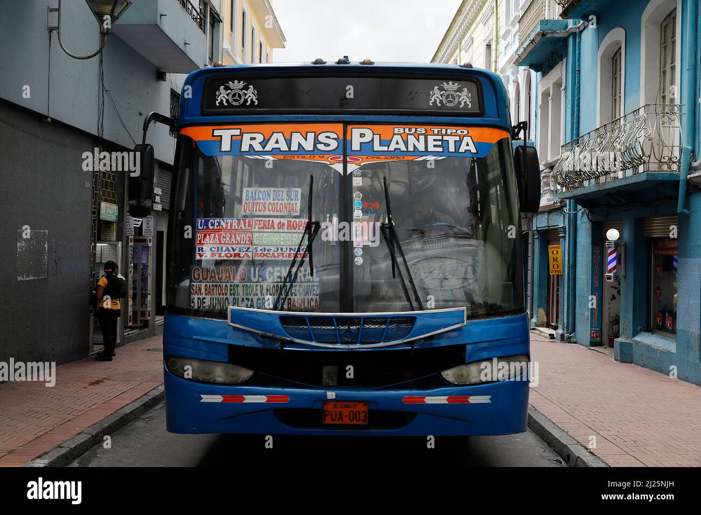
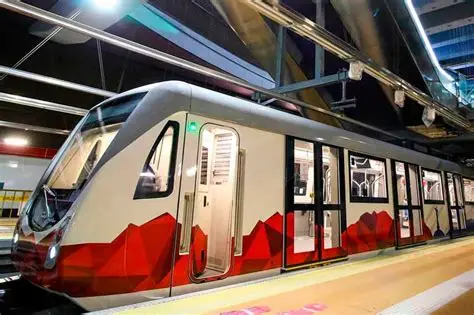
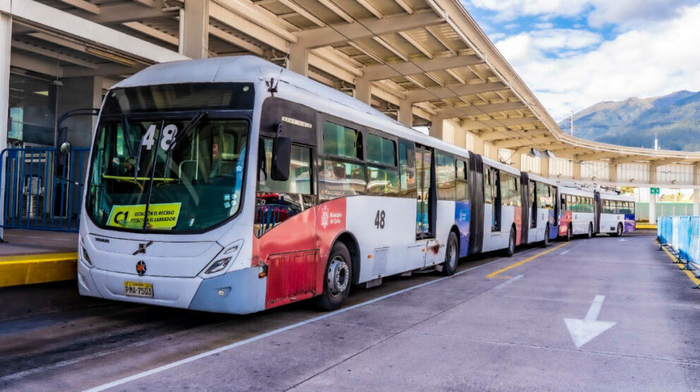
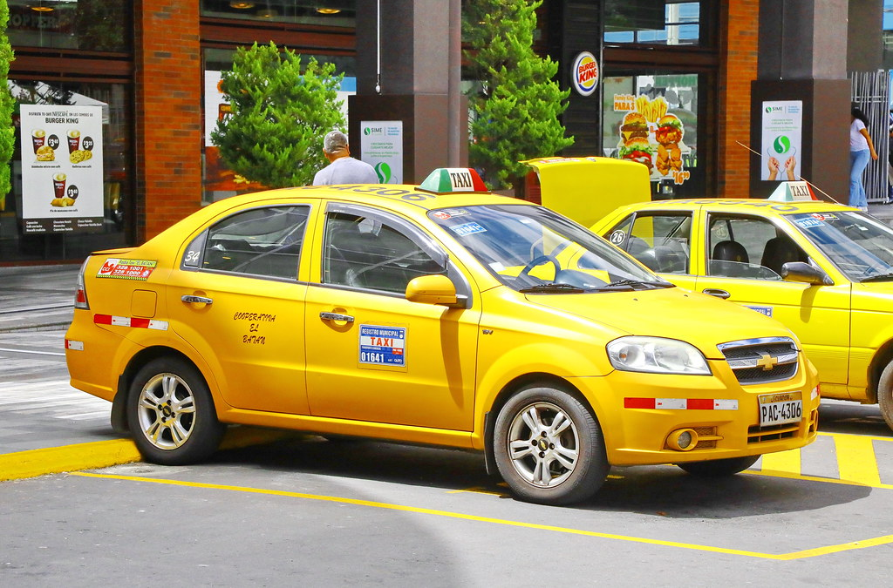
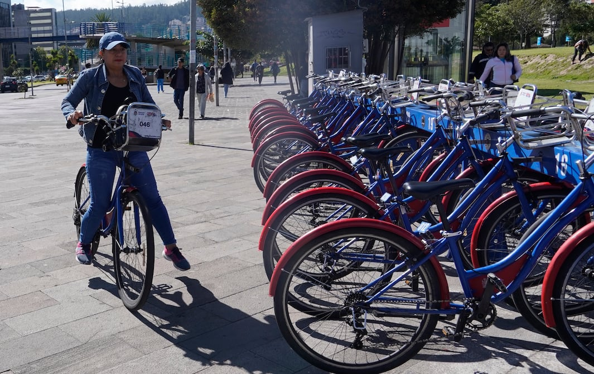

Autobús urbano
Medio de transporte utilizado para movilizar pasajeros dentro de las ciudades.
Conoce los diferentes medios de transporte que facilitan la movilidad de las personas.

Medio de transporte utilizado para movilizar pasajeros dentro de las ciudades.

Sistema de transporte ferroviario que permite trasladar muchas personas rápidamente.

Transporte eléctrico que utiliza cables aéreos para obtener energía.

Vehículo de transporte público que circula sobre rieles instalados en las ciudades.

Servicio de transporte que permite trasladar pasajeros hacia diferentes destinos.

Alternativa de movilidad económica y ecológica para recorrer distancias cortas.
El transporte público es fundamental para la movilidad de las personas. Facilita los desplazamientos diarios, reduce el uso de vehículos particulares y contribuye al cuidado del medio ambiente.